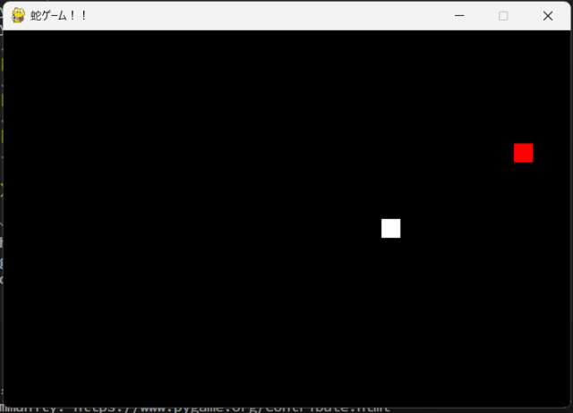
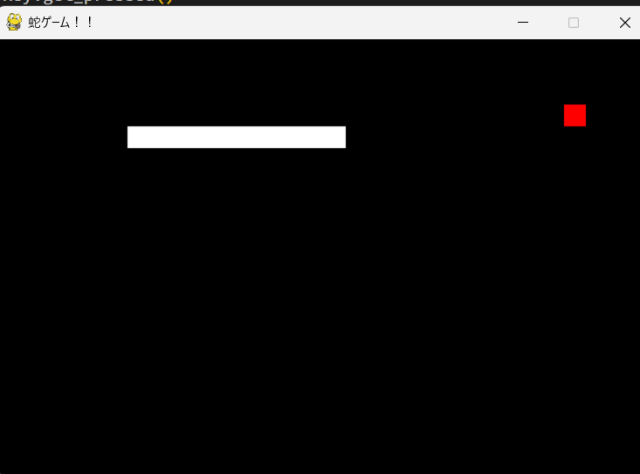
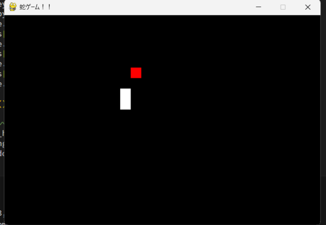

経験のあるプログラミング言語:
・python
経験のあるプログラミング言語:
・python
・Arduino
作成したもの：
①学校で作成した問題と回答を入力してランダムに出すツール↓
2年生時個人で開発した．
②2023年度高専祭で作成したプログラミングの補助↓
２年生の高専祭の出しもので５人のチームで開発したものであり、ゲームオーバー機能等と少しキャラー作成を行った．
③「蛇ゲーム」
googleでもプレイすることのできる蛇ゲームを簡単に再現した．蛇が食べ物をとることで蛇が長くなる，シンプルなゲームで誰でも簡単に遊べる．
本来壁に当たるとゲームオーバーだが，うまく作れなかったため左の壁に当たった場合は右の壁から右に当たると左から出てくるようにした．
個人的には、食べ物の設定と，蛇の移動がとても難しく，一番時間がかかった．



作成期間2023年12月~2024年1月
④「電卓」
足し算引き算掛け算割り算と微分積分のできる電卓を作成しました．例外処理の記述の妙に時間がかかってしまい，想像以上に出来が悪くなってしまった．
＝を使って実際の関数電卓に近い形にしたかったが，最終的には演算をそれぞれ分けてすることで落ち着いた．
今後は，「半角にも全角にも対応される」「分けた演算を一つにする」「計算結果をわかりやすくする」「複数の演算をできるようにする」の４つを進めたい．
計算したい式を入力し計算したい方法をおす．
作成期間2024年2月 作成時間１０時間
⑤「高専生に向けたsns」
2024年の春休みに高専テクノゼミ様主催の
「実践教育プログラムwebハッカソン破」に参加した際に開発した高専生のためのsns.
自分の初めてのweb開発であり，バックエンドでapi開発を行った．
今までしていたpythonのプログラムと違いとても新鮮な気持ちで学習することができた．
プログラミングに関すること以外にも，ビジネス的な観点の持ち方なども教わり非常に有意義であった．
⑥「webサーバー構築手順書」